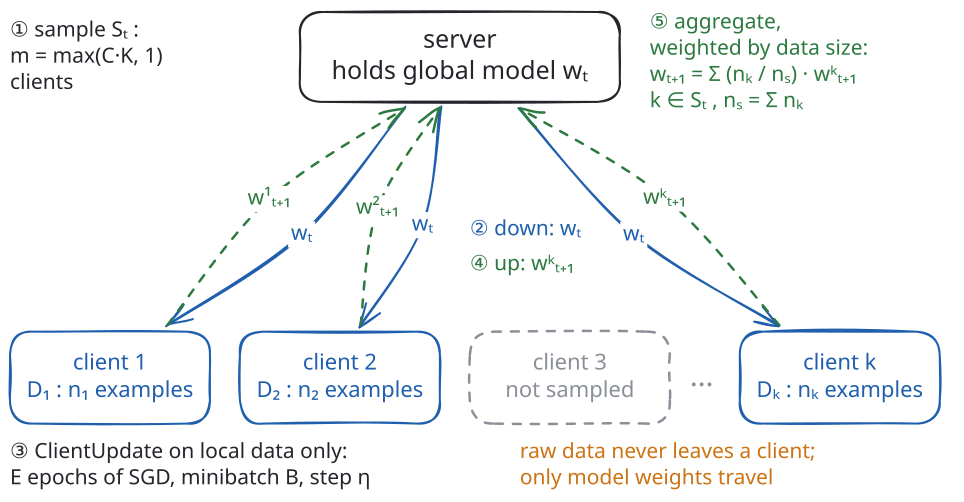

Problem: train one model on data spread over $K$ devices. Data can't leave them, and every communication round is expensive.
1/4McMahan et al., AISTATS 2017 · gray refs = where in the paper · + = my explanation, not the paper's

+ the paper's Alg. 1 writes the sum as $\sum_{k=1}^{K}\frac{n_k}{n}$; with a sample $S_t$, renormalise by $n_S$ so the weights sum to 1.
| $C$ | fraction of clients per round |
| $E$ | local epochs per round |
| $B$ | local minibatch ($B=\infty$: whole $\mathcal P_k$) |
FedSGD is the case $E=1,\ B=\infty$: one full-batch gradient per client per round. The baseline. §2
What travels? $w_t$ down, $w^k_{t+1}$ up (and $n_k$). Never data.
Important assumption: every client starts the round from the same $w_t$. Averaging nets trained from different inits fails Fig. 1
more local work ($E\uparrow$, $B\downarrow$) → more progress per round → fewer rounds (paper: 10–100× fewer than FedSGD in its experiments) → but on non-IID data, more local work = more drift (pp. 2–4)
Problem: the server averages weights. When is that the same as descending the global loss?
2/4Numbers: $n_1 = 100,\ n_2 = 300$, $w^1 = 2,\ w^2 = 6$
$\Rightarrow w_{t+1} = \tfrac14\cdot 2 + \tfrac34\cdot 6 = 5$ (plain mean: 4)
$g_k$: minibatch gradient of $F_k$. For $s \ge 1$ the point $\color{#c0392b}{w^k_{t,s}} \ne w_t$, and it moves toward client k's optimum.
→ only the first local step is a GD step on $f$. Small $\eta u_k$: ≈ $u_k$ steps on $f$; large: drift.
Common mistake: uniform $\frac{1}{|S_t|}$ average minimises $\frac1K\sum_k F_k$: every client counts equally, not every example. Differs when $n_k$ are unequal.
at $w^\star$: $\nabla f = 0$, but the red term $\ne 0$ unless all $H_k$ are equal or all $\nabla F_k(w^\star) = 0$ → FedAvg steps away from $w^\star$. Check p. 4, $u = 2$: $0.01\cdot(\tfrac12\cdot 1\cdot 3 + \tfrac12\cdot 3\cdot(-3)) = -0.03$, so $3 \to 2.97$ ✓
Problem: we minimise $f = \sum_k p_k F_k$, but client $k$ only ever sees $F_k$. If $F_k \ne f$, its local steps head somewhere else.
3/4every client sees a shuffled sample → $F_k \approx f$ → both paths follow $f$; $w_{t+1}$ lands on the end of the gray path. §2
each path bends toward its own $w^\star_k$. The average misses where $u$ steps on $f$ would go.
Same $f$ (gray rings), same $w_t$, $\eta = 0.1$, $u = 5$ local GD steps in both panels; only the split differs. Dashed gray = 5 GD steps on $f$ itself. + 2-D quadratic cartoon: real losses are non-convex, the mechanism is the same.
non-IID → $\nabla F_k(w) \ne \nabla f(w)$ → $u_k$ steps follow $F_k$, curve toward $w_k^\star$ → $\Delta_k$ biased → average lands off the path of $f$, even when started at $w^\star$ (p. 4)
heterogeneity: how much clients disagree about the downhill direction. $\zeta = 0$ at every $w$ → no drift. Drift grows with $\zeta$ and with $\eta u_k$.
"client drift" is the later name (Karimireddy et al. 2020, SCAFFOLD); the 2017 paper doesn't use it.
label skew: client sees few classes. Paper's "pathological" MNIST: sort by digit, 200 shards of 300, 2 shards per client. §3
quantity skew: unbalanced $n_k$ → weights $p_k$ matter.
+ feature skew: same labels, different inputs (handwriting, cameras).
Notice: the paper reports FedAvg still trains well on its pathological split. Drift slows and biases it; it need not break it. Very large $E$ can plateau or diverge; the authors suggest decaying local work. §3
Problem: two clients, different optima. Does FedAvg converge to the global optimum? +
4/4optima $c = (0, 4)$, curvatures $a = (1, 3)$
$w^\star = 3$, $f(3) = 3$. The steep client pulls $w^\star$ toward 4.
each local GD step shrinks the gap to $c_k$ by $\rho_k$. $\;\eta = 0.1$: $\rho = (0.9,\ 0.7)$
| $u$ | $w^1 = 0.9^u\cdot 3$ | $w^2 = 4 - 0.7^u$ | $w_{t+1}$ |
|---|---|---|---|
| 1 | 2.7 | 3.3 | 3.0 stays |
| 2 | 2.43 | 3.51 | 2.97 leaves |
| $\infty$ | 0 | 4 | 2.0 |
$u \to \infty$: $f(2) = 4 \gt f(3)$, and $f'(2) = -2 \ne 0$: not even stationary.
$u = 1$: $1-\rho_k = \eta a_k$ → $\bar w = w^\star = 3$ ✓
$u = 2$: $\frac{0.51\cdot 4}{0.19 + 0.51} = 2.91$ · $u = 5$: 2.68 · $u = 10$: 2.39
$u \to \infty$: $\bar w \to \sum_k p_k c_k = 2$ (curvature forgotten)
What changes? $E\uparrow$ or $B\downarrow$ → $u\uparrow$ → fewer rounds, but $\bar w$ slides from $w^\star$ toward $\sum_k p_k c_k$.
$\eta\downarrow$ → drift term $\propto \eta^2$ shrinks faster than progress $\propto \eta$ → less bias, slower.
Assumes full-batch local GD, quadratic $F_k$, $\eta a_k \lt 2$. In this toy the bias needs different curvatures: with $a_1 = a_2$ it vanishes.